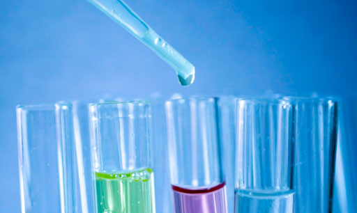
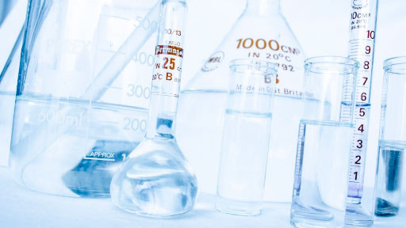
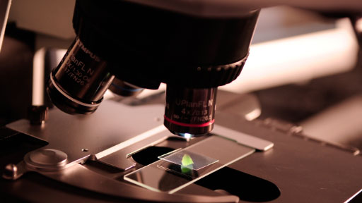
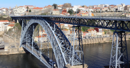

Um programa de apoio ao ensino experimental das Ciências no Ensino Básico

Uma proposta da Universidade do Porto/Casa das Ciências para a valorização da componente experimental do Estudo do Meio no Ensino Básico.
Esta proposta está a ser apresentada às escolas/agrupamentos de vários concelhos da região Norte e aos respetivos responsáveis municipais.
O que propomos?

A realização de atividades experimentais na sala de aula com o apoio de um monitor formado e orientado pela Universidade do Porto.

Um módulo de 25 horas de formação sobre o ensino experimental das ciências proposto aos professores das turmas participantes.
Quem colabora no projeto?
Casa das Ciências
FCUP

Municípios da região Norte
Escolas aderentes